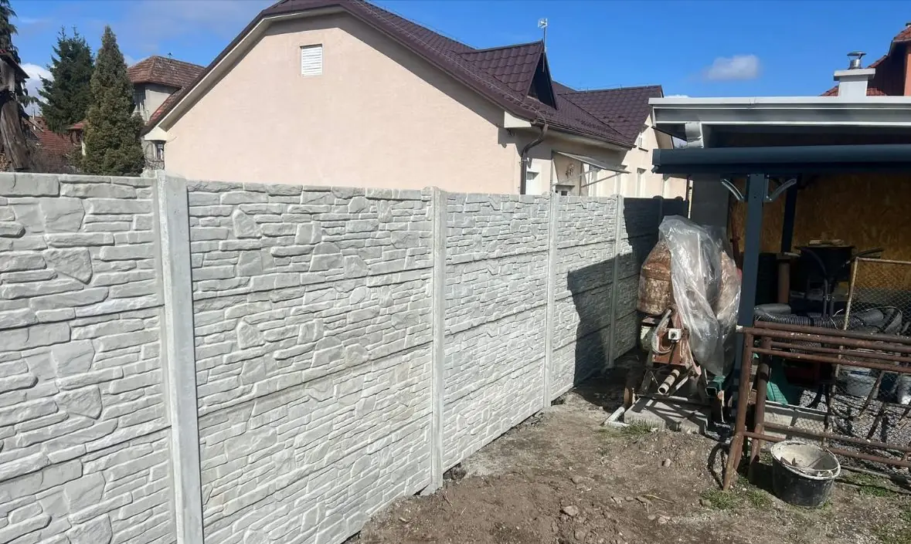
Plot, ktorý
naozaj vydrží.
Betónové a 3D ploty na mieru — zamerané, dovezené a postavené jednou partiou od základu po poslednú tvárnicu. Bez sprostredkovateľov, bez prekvapení vo faktúre.
Raz postavíme.
Vy sa oň nestaráte.
Žiadne natieranie, žiadne opravy, žiadne telefonáty o pár rokov. Staviame na základoch, ktoré vydržia ďalších 30 rokov bez toho, aby ste sa nimi museli zaoberať.
Moderný dizajn
Kamenný, drevený aj hladký dekor — panely, ktoré ladia s fasádou aj strechou, nie proti nej.
Dlhá životnosť
Vibrolisovaný betón odolný mrazu, vlhkosti aj slnku. Stavia sa raz, drží desaťročia.
Bezúdržbové riešenie
Žiadne natieranie, žiadna impregnácia každý druhý rok. Umyje ho dážď.
Montáž na kľúč
Zameriame, dovezieme, postavíme. Jeden dodávateľ, jedna zodpovednosť.
Tri dekory,
jedna pevnosť.
Každý panel je vibrolisovaný betón s reliéfnym povrchom. Rozdiel je len v tom, akú štruktúru mu dá forma. Vyberte si, čo bude sedieť k vášmu domu.
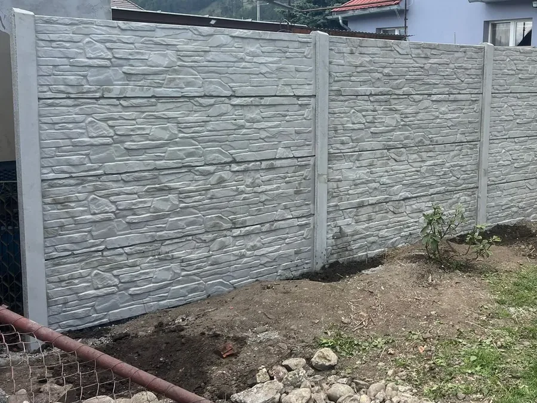
Štiepaný kameň
Hlboký reliéf pripomínajúci ručne kladený lomový kameň. Najžiadanejší dekor — pôsobí masívne, no montuje sa rovnako rýchlo ako hladký panel.
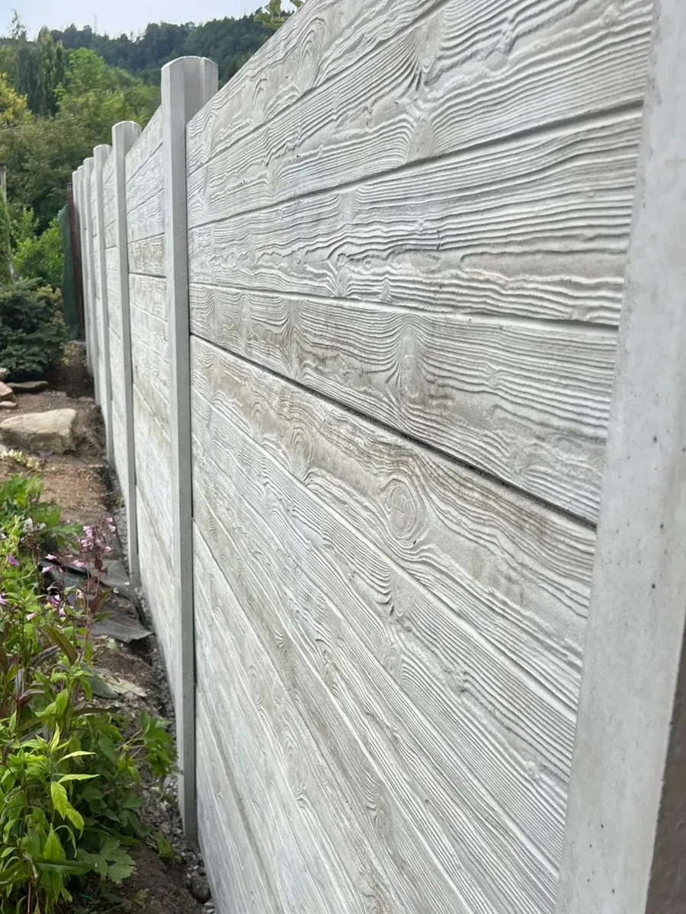
Drevodekor
Detailná kresba dreveného laťovania s výraznými sukmi, odliata priamo do betónu — vzhľad skutočného dreveného plota bez natierania, hnitia a výmeny lát po rokoch.
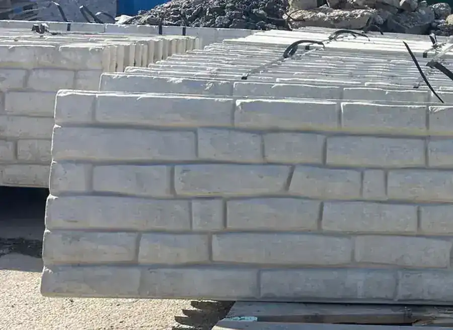
Murovaný vzor
Murovaná väzba s výrazným hrubším reliéfom pripomínajúcim skladané kamenné bloky — každý panel má svoju vlastnú kresbu, žiadne dva nie sú úplne rovnaké.
Skutočné ploty.
Žiadne fotomontáže.
Výber z plotov, ktoré stoja na skutočných pozemkoch v okolí Ružomberka — fotené hneď po montáži.
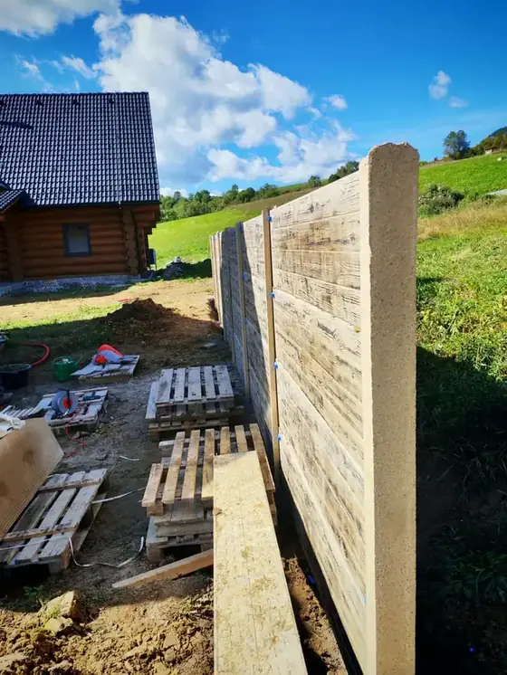
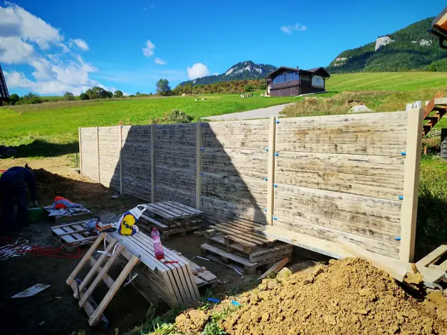
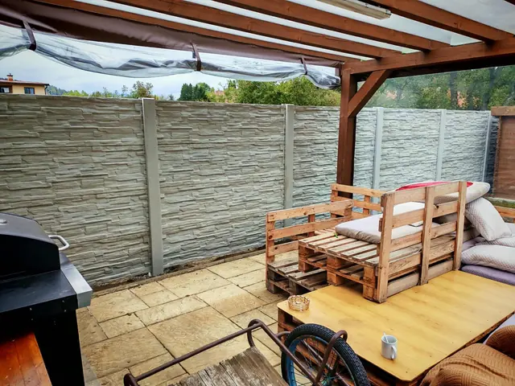
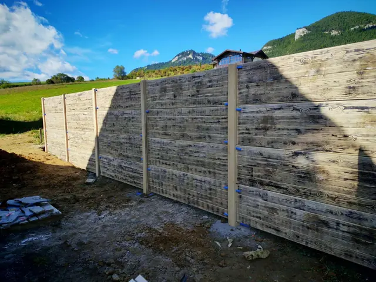
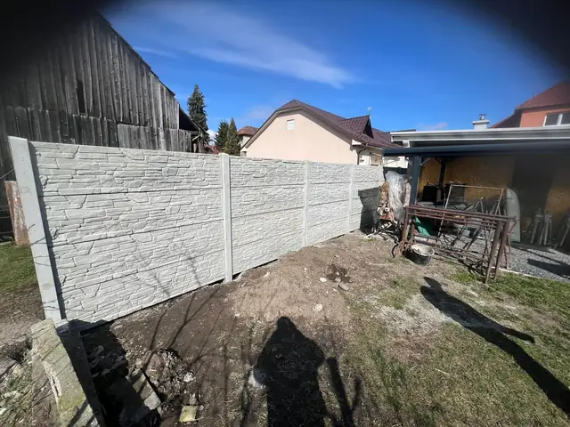
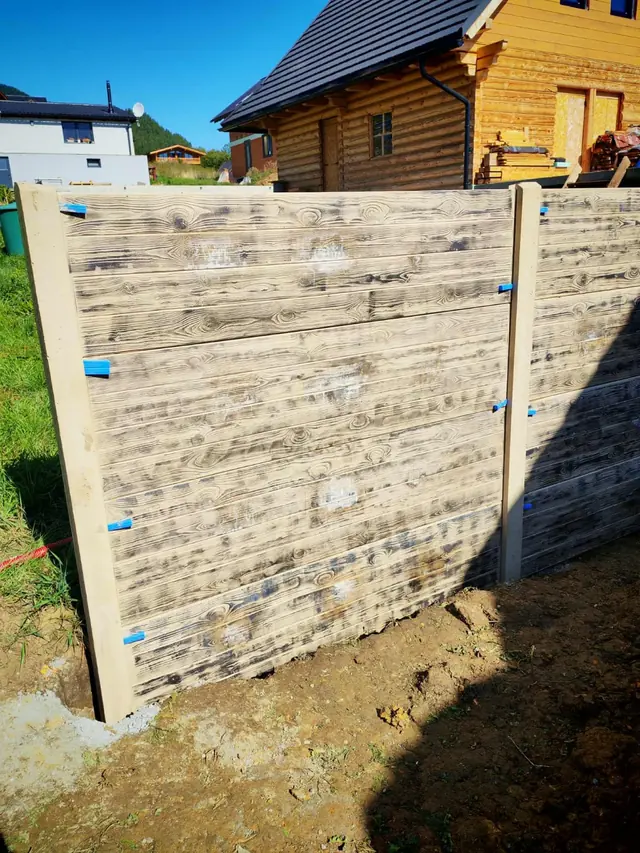
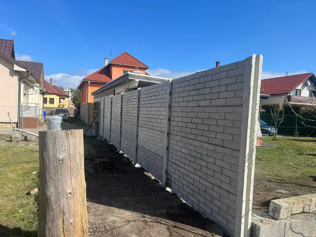
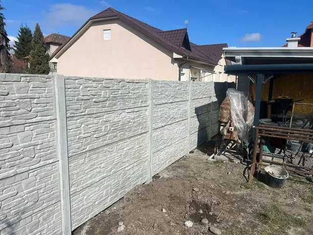
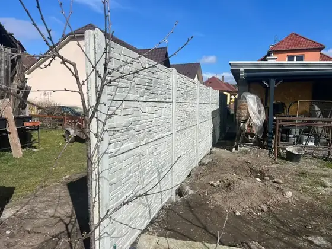
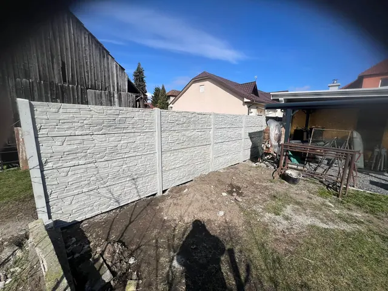
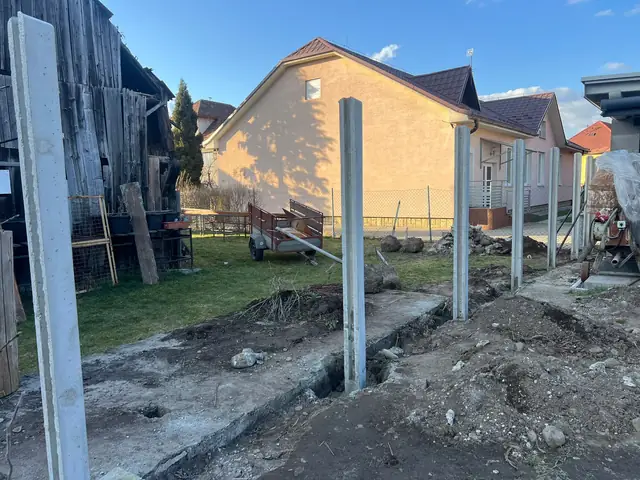
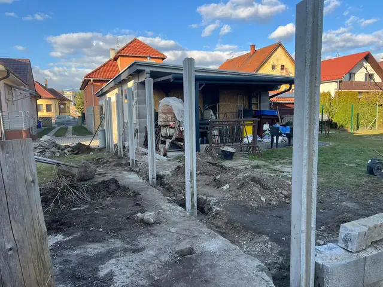
Od telefonátu
po hotový plot.
Konzultácia
Zavoláte, napíšete e-mail alebo vyplníte formulár. Do 24 hodín sa ozveme a prejdeme predstavu aj rozpočet.
Zameranie
Prídeme na pozemok, zmeriame terén, prekonzultujeme dekor, výšku a osadenie brány.
Cenová ponuka
Pošleme presnú kalkuláciu na mieru — materiál, dovoz aj montáž v jednej sume.
Montáž
Dovezieme, postavíme, upraceme po sebe. Plot preberáte hotový, pripravený na roky.
Ružomberok a celé okolie.
Skôr než
zavoláte.
Cena závisí od dĺžky, výšky a zvoleného dekoru. Po telefonáte alebo obhliadke pripravíme presnú kalkuláciu — materiál, dovoz aj montáž v jednej sume, bezplatne a nezáväzne.
Podľa dĺžky plota a terénu — presný termín dohodneme po zameraní pozemku. Dovezieme, postavíme a upraceme po sebe, plot preberáte hotový.
Áno, realizujeme v Ružomberku a okolitých obciach Žilinského kraja. Pri väčších zákazkách vieme vyraziť aj ďalej — stačí napísať, kde stavbu plánujete.
Tri základné dekory — štiepaný kameň, drevodekor a murovaný tehlový vzor. Všetky sú vibrolisovaný betón s reliéfnym povrchom, odolný mrazu aj vlhkosti.
Zavoláte alebo napíšete e-mail, do 24 hodín sa ozveme. Prídeme na bezplatnú obhliadku, pošleme cenovú ponuku a po odsúhlasení dovezieme a postavíme plot na kľúč.
Nie. Vibrolisovaný betón nevyžaduje natieranie ani impregnáciu — stačí ho umyť dažďom. Je to bezúdržbové riešenie na desaťročia.
Betónové ploty realizujeme do maximálnej výšky 200 cm. Presnú výšku prispôsobíme vášmu pozemku pri obhliadke.
Chcete presnú cenu?
Zavolajte alebo napíšte.
Obhliadku aj cenovú ponuku pripravujeme bezplatne a nezáväzne — ozveme sa do 24 hodín.